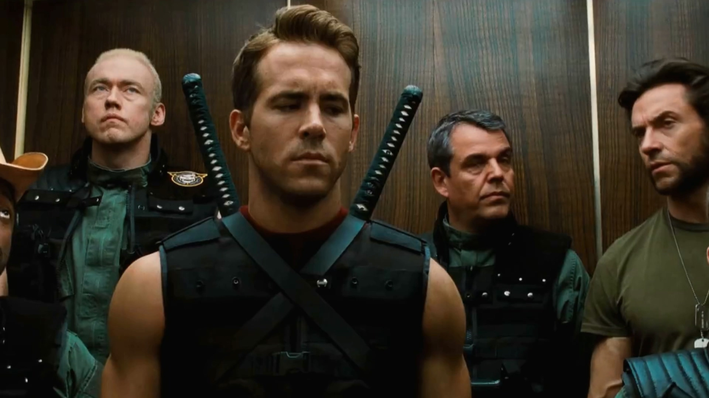
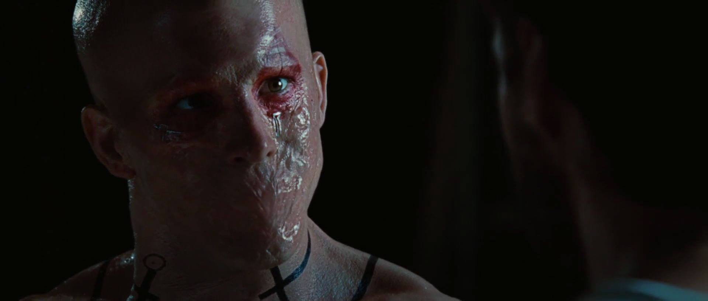
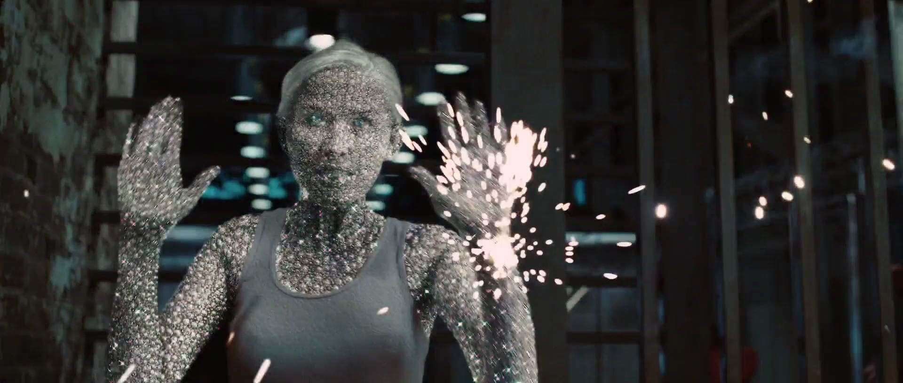

Free Download X-Men 4 Origins: Wolverine (2009) Hindi Dubbed Full Movie Dual Audio (Hindi-English). This is a dual audio movie and available in 480p & 720p quality. TThis movie is based on Action & Sci-Fi Genre. It features Hugh Jackman, Will Yun Lee, Tao Okamoto as the main star cast of the movie. This movie is now dubbed in Hindi in 720p & 480p & 1080p MKV. This Print comes with very Good Audio and BluRay.
iWatchEverything.unaux.com is the best Website to To Download Hollywood Movies, Web Series, Tv Series, Hindi Dubbed And Multi Audio Movies. We Are Providing You Direct Secure Google Drive Link For Fast Downloading. Just Click On Download Button To Download All Movies In Few Clicks And Seconds. Also You Can Watch Movies Online.

X-Men 4 Origins: Wolverine (2009)
126 min|Action, Sci-Fi|26 Jul 2009
Rating: 6.7 / 10 from 432,902 users
Wolverine comes to Japan to meet an old friend whose life he saved years ago, and gets embroiled in a conspiracy involving yakuza and mutants.
Director: James Mangold
Creator: Mark Bomback (screenplay), Scott Frank (screenplay)
Actors: Alexander Skarsgård, Millie Bobby Hugh Jackman, Tao Okamoto, Rila Fukushima, Hiroyuki Sanada.
Download X-Men 4 Origins: Wolverine (Hindi Dubbed) 480p – 720p – 1080p ~ iWatchEverything.unaux.com
Movie Info:
Full Name: X-Men 4 Origins: Wolverine
Release Year: 2009
Country: Pakistan
Subtitles: English
Runtime: 2h 6m
Language: Dual Audio [English+Hindi]
Quality: 480p & 720p & 1080p
Size: 450mb & 950mb & 2.8gb
Plot/Storyline:
In 1845, James Howlett, a boy living in Canada, witnesses his father being killed by groundskeeper Thomas Logan. Anxiety activates the boy’s mutation: bone claws protrude from his knuckles and he impales Thomas, who reveals that he is James’ birth father before dying. James flees along with Thomas’ other son Victor Creed, who is James half-brother and has a sharp claw-nails and healing factor mutation like James. They spend the next century as soldiers, fighting in the American Civil War, both World Wars and the Vietnam War in 1973. In Vietnam, the increasingly violent Victor attempts to rape a Vietnamese woman and kills a senior officer who tries to stop him. James returns to Victor upon the commotion, and ignorant of his brother’s intent, he rushes to defend him. This results in the pair being sentenced to execution by firing squad, which they survive due to their mutant healing abilities. Major William Stryker approaches them in military custody and offers them membership in Team X, a group of mutants including expert marksman Agent Zero, katana-wielding mercenary Wade Wilson, teleporter John Wraith, super-strong and invulnerable Fred Dukes and technopath Chris Bradley. They join the team for a few missions, with James using the alias Logan, but Victor and the group’s lack of self-control and empathy for human life causes Logan to leave.
ScreenShots:
  
Helpful Right? If you are looking for X-Men 4 Origins: Wolverine (2009) Movie Download in Hindi Dubbed then don’t worry. Below you can easily find the download link. Enjoy Our Service!!
Download X-Men 4 Origins: Wolverine Dual Audio (Hindi-English).
Thanks for visiting iWatchEverything Website he hub for Hollywood Movies & TV Series for downloading X-Men 4 Origins: Wolverine dual audio.